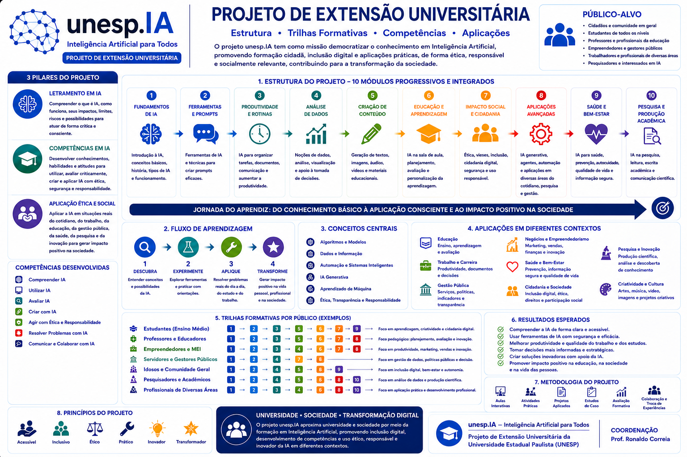

Letramento em IA
Reconhecer onde a IA está presente, como funciona, quais benefícios oferece e quais limites e impactos precisam ser considerados.
Formação acessível, prática, crítica e socialmente responsável para que pessoas de diferentes idades e formações possam compreender, utilizar, avaliar, criar e aplicar Inteligência Artificial com autonomia e segurança.
Programa modular e flexível, com materiais para participantes, monitores e docentes, atividades práticas e percursos adequados a diferentes públicos.


Inscrições de 06 a 17/07/2026, com início em 05/08/2026. Encontros presenciais às quartas-feiras, das 8h às 11h, na FCT/UNESP.
A Inteligência Artificial já participa de atividades cotidianas como comunicação, mobilidade, estudo, trabalho, serviços públicos e produção de conteúdo. O Projeto unesp.IA aproxima a sociedade dessa tecnologia por meio de uma formação inclusiva que combina conhecimento introdutório, experimentação e reflexão crítica.
Como ação de extensão universitária da UNESP/FCT, o programa integra universidade e sociedade com participação de estudantes de Ciência da Computação como monitores e mediadores, sob supervisão docente. Sua estrutura permanente, modular e flexível permite organizar percursos conforme o perfil, o interesse e o nível de conhecimento de cada público.
Reconhecer onde a IA está presente, como funciona, quais benefícios oferece e quais limites e impactos precisam ser considerados.
Utilizar ferramentas, formular instruções, avaliar respostas, verificar informações, proteger dados e criar soluções simples.
Empregar a tecnologia de forma responsável em estudo, trabalho, educação, negócios, gestão pública, saúde, pesquisa e cidadania.
Conheça, em um único infográfico, os pilares, os módulos formativos, os públicos, as competências e os resultados esperados do unesp.IA.

7 unidades. Acessar módulo
6 unidades. Acessar módulo
6 unidades. Acessar módulo
5 unidades. Acessar módulo
6 unidades. Acessar módulo
6 unidades. Acessar módulo
6 unidades. Acessar módulo
6 unidades. Acessar módulo
6 unidades. Acessar módulo
6 unidades. Acessar módulo
Cada volume do aluno, com conteúdo, exemplos, atividades, laboratórios, links internos e produtos finais.
Abrir materialMaterial do monitor e do docente, com roteiro de aula, mediação, preparação, perguntas de apoio e avaliação.
Abrir materialExercícios, desafios, quizzes (questionários), tarefas práticas e autoavaliações organizados por módulo e unidade.
Abrir materialOficinas passo a passo para uso presencial ou online, com ferramentas, conceitos, exemplos, etapas e produto final.
Abrir materialSituações reais ou simuladas para discussão, análise, tomada de decisão e resolução de problemas.
Abrir materialBiblioteca de prompts organizada por competências, contextos, públicos e ferramentas.
Abrir materialRoteiros de apresentação correspondentes aos módulos, com sequência sugerida, imagens e atividades.
Abrir materialRecursos visuais padronizados, originais e reutilizáveis para os volumes e para o portal.
Abrir materialAmbiente didático navegável, no estilo wiki, para participantes, monitores e docentes.
Abrir material